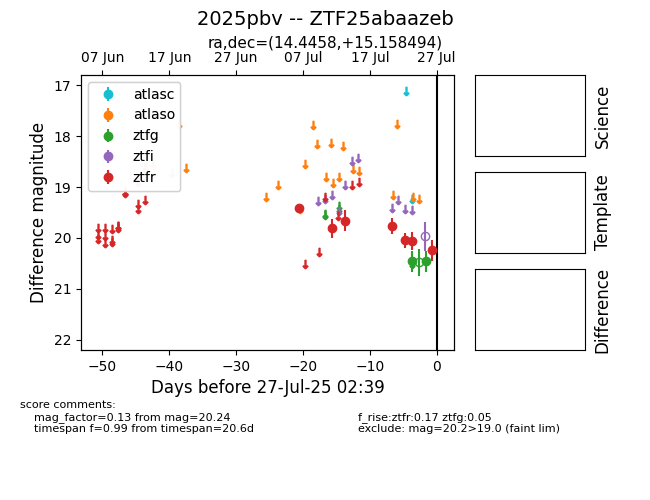

Target 2025pbv at 2025-07-27 02:39, see:
FINK: fink-portal.org/2025pbv
Lasair: lasair-ztf.lsst.ac.uk/objects/2025pbv
ALeRCE: alerce.online/object/2025pbv
TNS: wis-tns.org/object/2025pbv
YSE: ziggy.ucolick.org/yse/transient_detail/2025pbv
alt names
ZTF25abaazeb (ztf,fink)
2025pbv (tns,yse)
coordinates:
equatorial (ra, dec) = (14.4458,+15.15849)
galactic (l, b) = (125.2067,-47.68523)
photometry
last atlaso=nan, ztfg=20.46, ztfr=20.24
1 atlaso, 2 ztfg, 7 ztfr detections
